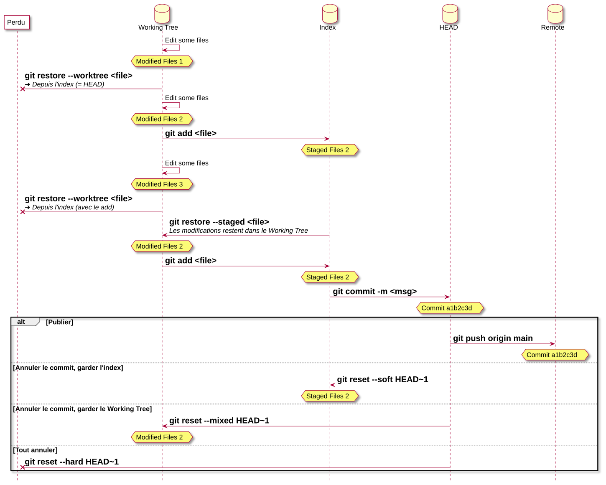
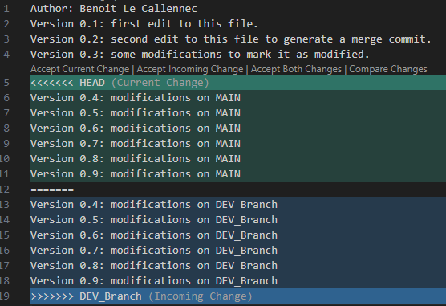
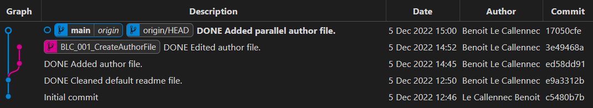

2243.2 Génie Logiciel - 2026-2027
10.1 Vue d'ensemble
10.2 Branches
10.3 Identifier des commits
10.4 Merge et conflits
10.5 Rebase
10.6 Annuler et réparer

| créer une branche | |
| passer sur une branche | |
| créer une branche et passer dessus | |
| lister les branches | |
| lister les branches (plus des infos) | |
| lister les branches mergées | |
| lister les branches non-mergées | |
| détruit la branche | |
| détruit la branche (sur le serveur) |
Avec son hash
Avec sa branche ➔ dernier commit sur cette branche
| ➔ le dernier commit | |
| ➔ l'avant-dernier / pénultième commit | |
| ➔ l'antépénultième | |
| ➔ le préantépénultième |
Author: Benoit Le Callennec
Version 0.1: first edit to this file.
Version 0.2: second edit to this file to generate a merge commit.
Version 0.3: some modifications to mark it as modified.
Version 0.4: modifications on MAIN
Version 0.5: modifications on MAIN
Version 0.6: modifications on MAIN
Version 0.7: modifications on MAIN
Version 0.8: modifications on MAIN
Version 0.9: modifications on MAIN
Author: Benoit Le Callennec
Version 0.1: first edit to this file.
Version 0.2: second edit to this file to generate a merge commit.
Version 0.3: some modifications to mark it as modified.
Version 0.4: modifications on DEV_Branch
Version 0.5: modifications on DEV_Branch
Version 0.6: modifications on DEV_Branch
Version 0.7: modifications on DEV_Branch
Version 0.8: modifications on DEV_Branch
Version 0.9: modifications on DEV_Branch

Author: Benoit Le Callennec
Version 0.1: first edit to this file.
Version 0.2: second edit to this file to generate a merge commit.
Version 0.3: some modifications to mark it as modified.
Version 0.4: modifications on MAIN
Version 0.5: modifications on DEV_Branch
Version 0.6: modifications on MAIN
Version 0.7: modifications on DEV_Branch
Version 0.8: modifications on MAIN
Version 0.9: modifications on DEV_Branch
Rejoue les commits d'une branche, sur une autre branche
Peut introduire des conflits
Permet de rendre l'historique linéaire

Moderne
git switch main
git pull --rebase
git switch <Dev>_<Id>_<Summary>
git rebase main
git switch main
git merge --ff-only <Dev>_<Id>_<Summary>
git push origin main
git branch --delete <Dev>_<Id>_<Summary>
Classique
git checkout main
git pull --rebase
git checkout <Dev>_<Id>_<Summary>
git rebase main
git checkout main
git merge --ff-only <Dev>_<Id>_<Summary>
git push origin main
git branch --delete <Dev>_<Id>_<Summary>
(ou simplement
Remet
Deux cas, selon ce que contient l'index :
| HEAD | Index | Working Tree | |
|---|---|---|---|
| Avant | |||
| Après |
L'index contient la même version que
| HEAD | Index | Working Tree | |
|---|---|---|---|
| Avant | |||
| Après |
Retour à la version de l'index, pas à celle de
Revenir à
Retire les modifications faites à
git reset --soft <commit>
git reset --mixed <commit>
git reset --hard <commit>
Déplace
| les modifications sont gardées dans l'index | |
| les modifications sont gardées dans le Working Tree | |
Modifier le dernier commit
Nouvelles modifications pour annuler des modifications précédentes
Peut introduire des conflits
Git note chaque déplacement de
> git reset --hard HEAD~1
> git reflog
4681cfb (HEAD -> main) HEAD@{0}: reset: moving to HEAD~1
7c37a40 HEAD@{1}: commit: DONE Commit for testing log command
...
> git branch oupsy 7c37a40
Le commit « perdu » est de nouveau accessible par la branche
| Commande | Annule… | Réécrit l'historique ? |
| les modifications du Working Tree absentes de l'index | ||
| l'ajout dans l'index | ||
| un ou plusieurs commits | ||
| le dernier commit | ||
| plusieurs commits | ||
| un commit, par un nouveau commit |